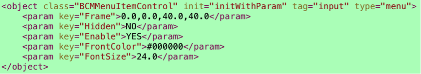

本文档内容针对emp5.2版本。
容器类控件:这里提到的容器类控件仅指在CONTROLS_BELONG_CONTAINER中定义的控件及子类.
- (void)initView方法，负责控件视图的初始化工作。基类（RYTControl）中的默认实现为初始化一个RYTView的视图对象。
- (void)initWithParam:(NSDictionary *)params, 通常为配置在class.xml文件中的控件初始化方法。 子类中需要调用父类的此方法。 并且需要需要调用- (void)initView方法时，通常在此方法中调用。基类的实现中不调用- (void)initView方法。
- (void)initDefaultValue, 此方法在布局算法之前调用，对控件的部分属性进行初始化操作。基类的实现中仅对name，value，onclick，enable属性进行了处理。 同时会调用子控件的- (void)initDefaultValue方法。
- (void) initLayoutEngine方法需要子控件根据情况选择是否调用。此方法会创建并初始化布局类（RYTViewLayout）。针对容器类控件，如果需要使用默认布局算法，可以调用此方法创建布局类。
- (CGSize)layoutTBXMLRootElement:(TBXMLElement *)rootElement withView:(UIView *)parentView byAvailableSize:(CGSize)availableSize 此方法为布局类（RYTViewLayout）的布局算法。
与5.1版本的扩展不同，5.2的扩展做了部分变动。
与5.1不同，5.2对布局算法做了统一的规划。
增加了- (CGSize) layoutSubViewsBySize:(CGSize)availableSize方法。用来处理容器类控件的布局及size的计算。
对于非容器类控件，依然调用- (CGSize)sizeThatFits:(CGSize)size方法。- (void)layoutSubviews方法将不再调用。需要将- (void)layoutSubviews中的操作移到- (CGSize)sizeThatFits:(CGSize)size 或 - (CGSize) layoutSubViewsBySize:(CGSize)availableSize方法中。addSubview的操作在布局算法中将自动执行，不需要在- (void)layoutSubviews方法中执行。
a. 设计新控件对应的标签格式
优先选择已有的标签，通过扩展type属性值来增加新控件，如<input type=”newElement”></input>;
当已有标签不满足时，再通过增加标签来添加，
如<newElement></newElement>。
b. 创建控件类的配置文件，增加新控件与标签的映射关系
class.xml中定义了控件类与标签的映射关系，在此文件中增加新的控件与标签的配置信息，同时可以配置控件类的初始化方法及默认参数，所有控件类的创建都是根据此配置文件来匹配。如果此文件中没有控件的配置信息，将不会创建改控件。
c. 客户端添加新控件类
根据新控件的行为选择应该继承的基类，遵循基类的设置方法来实现新类。
针对非容器类控件，扩展方法与5.1基本项目相同（- (void)layoutSubviews不再调用），比如已有的Button控件不能满足项目中Menu控件需要的展示和行为，自定义方法如下：
a. 设计新控件对应的标签格式
<object class="BCMMenuItemControl" init="initWithParam" tag="input" type="menu">
b. 创建类的配置文件，增加新控件与标签的对应关系。将其添加到class.xml文件中。

c. 客户端添加新控件类
因为menu的行为与button相似，所以把button作为基类；按需重写基类中部分方法：
如果你需要使用自定义的视图,可以重写- (void)initView方法,同时也要重写- (void)initWithParam:(NSDictionary *)params方法,并在其中调用- (void)initView. 因为基类中是不会主动调用- (void)initView方法的.
其他与视图相关的初始化都可以在- (void)initView实现.
实现- (CGSize)sizeThatFits:(CGSize)size方法,所有的针对控件的计算和样式的应用都在此方法中实现.并返回计算的控件的size.
- (void)layoutSubviews方法将不再被调用.
针对容器类控件,同样可以使用- (void)initView方式来初始化视图,与非容器类控件一样.
容器控件的算法与5.1不同。将不再调用- (void)layoutSubviews和- (CGSize)sizeThatFits:(CGSize)size两个方法，只调用- (CGSize) layoutSubViewsBySize:(CGSize)availableSize方法。
此方法中需要做以下处理:
调用父类的布局算法.
初始化布局引擎.
调用布局算法.
其他的功能实现.
-
//参照RYTDivControl的实现。
-(CGSize) layoutSubViewsBySize:(CGSize)availableSize {
[super layoutSubViewsBySize:availableSize]; //调用父类的方法
CGSize realSize = self.frame.size;
if (self.tbxmlelement->firstChild) {
[self initLayoutEngine]; //初始化布局引擎
realSize = [layout_ layoutTBXMLRootElement:tbxmlelement_ withView:_scrollView byAvailableSize:availableSize]; //调用布局算法
[_scrollView setContentSize:realSize];
}
CGRect _frame = self.frame;
_frame.size = realSize;
CALayer *layer = self.view.layer;
NSString *border = [property_ objectForKey:TAG_PROPERTY_BORDER];//div的border为0,去掉边框和背景
if (currentCSSStyle_.bgImageUrl_ || [border isEqualToString:@"0"]) {
layer.cornerRadius = 0;
layer.borderWidth = 0;
layer.borderColor = [UIColor clearColor].CGColor;
}
if (currentCSSStyle_.border_) {
CALayer *layer = view_.layer;
layer.cornerRadius = 10;
layer.borderWidth = currentCSSStyle_.border_.borderWidth;
layer.borderColor = currentCSSStyle_.border_.borderColor.CGColor;
}
if (currentCSSStyle_.width_ > 0.0) {
_frame.size.width = currentCSSStyle_.width_;
}else{
_frame.size.width = realSize.width ;
}
if (currentCSSStyle_.height_ > 0.0) {
_frame.size.height = currentCSSStyle_.height_;
}else{
_frame.size.height = realSize.height ;
}
self.frame = _frame;
[self applyStyleLeft];
return self.frame.size;
}